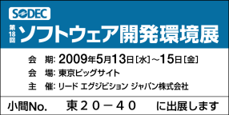

高性能なHTML->PDF変換国産ミドルウェア
2008年 7月 18日
f
5月15日の15時30分より技術セミナーを開催いたします。詳細はこちらから。
Copper PDF
はHTMLやXMLの文書をCSSを用いてPDFに変換するアプリケーションです。WEB開発で一般的なプログラミング言語(Java, PHP,
Perl)で出力したHTMLをPDFに変換するため、WEB開発の知識さえあればPDFの帳票やドキュメント類を出力することが出来ます。
HTML/CSSレンダリングエンジンは独自開発し、日本の開発現場の要請に即した最適化を追求しています。(機能一覧)
Copper PDF は、100%Javaで開発されたミドルウェアのため、Windows,
LinuxをはじめとするJavaを実行可能なシステム環境にご導入いただけます。他言語との連携はネットワーク通信を利用可能なため、Copper
PDFを別のサーバーマシンに導入したり、負荷分散も容易です。
パフォーマンスを重視した設計のため、小さなドキュメントから大きなドキュメントまで、多数のクライアントがアクセスする状況でも安定した高速性能を発揮します。（性能試験結果）旧
バージョンであるCSSJは、2005年3月の販売開始以来、国内外の様々なシステムの帳票・ドキュメント出力エンジンとして多くの導入事例がございま
す。導入先として、金融監督機関・大手銀行・大手証券会社・地方自治体・都道府県警などのシステムを中心に、150CPU程度の実績があります。
ライセンスの種類
CopperPDFは、下記３種類のライセンスをご用意しています。
プログラムをダウンロードした後、ご希望のライセンスに従い、
ライセンスキー取得の手続をお願いします。
（個人・非商用利用ライセンスに限り、無償でのご提供となります）